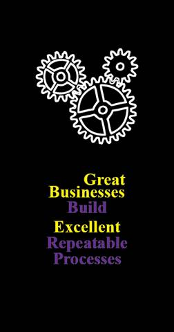

Success should not be a random outcome.
Whether the process is customer service, production, bidding, sales, distribution, human
resources, or any other important business process, quality and consistency should be expected.
Good process design (doing the right things the right way at the right time, efficiently and error
free) and outstanding training (adhering to the process, recognizing exceptions, understanding the
cost and impact of substandard elements, etc.) lead to consistent success.
Success is repeatable. Great businesses know this. They invest in good process design, set high
standards, and invest heavily in training.
Great businesses know that it is cheaper, more efficient, and more profitable to do things right
once and every time in a repeatable way than to act inconsistently and haphazardly. Inconsistent
processes, techniques, and approaches by an employee, across employees, or across the
company inevitably lead to confusion and problems. Inconsistency costs money, time, and
resources.
Repeatable marketing processes generate more business, faster and more effectively, than
random or inconsistent processes. Repeatable production processes generate higher quality
results at lower costs with less required supervision than erratic work processes and methods.
With repeatable processes, it is easier to identify opportunities for improvement and implement
solutions than for uneven, mercurial methods.
Success is repeatable. But you only have to call us once for help.